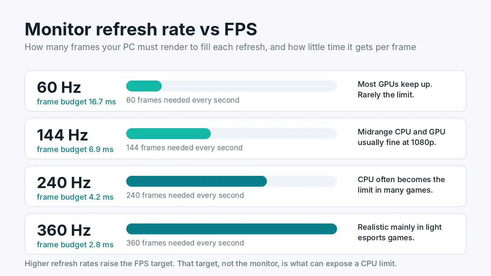

Can a Monitor Bottleneck Your PC? Refresh Rate vs FPS Explained
People often ask whether their monitor is holding back a new graphics card, or whether a 240Hz screen is wasted on their PC. The short answer is that a monitor never slows your computer down, but it does decide how much of your PC's work you actually get to see. It also sets the frame rate target, and that target is what can expose a CPU or GPU limit.

The Short Answer
A bottleneck is the part that stops the rest of the system from going faster. Your monitor does not do that. The CPU and GPU render frames at whatever speed they can manage, and the monitor simply displays them. What the monitor does limit is how many distinct frames reach your eyes. A 60Hz panel refreshes 60 times per second, so even if your GPU produces 200 FPS, you see at most 60 new images each second.
So the more useful question is not "is my monitor a bottleneck" but "does my monitor match my PC". A mismatch wastes money in one direction or the other.
How Refresh Rate and FPS Relate
Think of the GPU as a printer and the monitor as a person flipping through the pages. FPS is how fast pages come out of the printer. Refresh rate is how fast the person can turn them. If the printer is faster, pages pile up unseen. If the person is faster, they wait on the printer and see the same page twice.
- FPS below the refresh rate. The PC is the limit. Some refreshes repeat the previous frame, which can look less smooth. This is the common case on high refresh monitors.
- FPS roughly equal to the refresh rate. The ideal. Every refresh shows a new frame.
- FPS above the refresh rate. The monitor is the visual limit. Extra frames are not seen, although input can feel slightly more responsive, and without sync you may see tearing.
Variable refresh rate technology, sold as G-Sync and FreeSync, lets the monitor follow the GPU instead of refreshing on a fixed schedule. Our guide to V-Sync, G-Sync, FreeSync and FPS caps explains how to set this up and why a cap slightly below your refresh rate usually feels best.
Why a High Refresh Monitor Can Expose a CPU Bottleneck
This is where monitors and bottlenecks really meet. To fill a 60Hz screen, the PC has about 16.7 milliseconds to prepare each frame. At 144Hz it has about 6.9 milliseconds, at 240Hz about 4.2, and at 360Hz only about 2.8.
The GPU's share of that work depends mostly on resolution and graphics settings, which you can turn down. The CPU's share, such as game logic, physics, AI and sending draw calls, changes much less with settings. That means a CPU that comfortably handles 90 FPS will never reach 240 FPS in the same game, no matter how low you set the graphics. The monitor did not create that limit. It just set a target high enough to reveal it.
A practical sign: on a 240Hz monitor, you lower settings and the frame rate barely moves while GPU usage drops well below 90%. That points to a CPU limit. For the full diagnosis, see how to tell a CPU bottleneck from a GPU bottleneck and how to fix low GPU usage.
Resolution Matters More Than Refresh Rate for the GPU
The monitor's resolution decides how many pixels the GPU must draw. A 1440p screen has about 1.8 times the pixels of 1080p, and 4K has four times as many. Moving to a higher resolution monitor shifts the load toward the graphics card, which is why a CPU limit at 1080p can disappear at 4K. Our guide on 1080p vs 1440p vs 4K bottlenecks covers this in detail, and how much VRAM you need explains the memory side.
Upscalers such as DLSS and FSR render at a lower internal resolution, which eases the GPU load but leaves the CPU work the same. If you rely on them to hit a high refresh target, read how DLSS, FSR and frame generation affect bottlenecks.
Hidden Monitor Problems That Cap Your FPS
Sometimes the monitor setup really is the limit, not because of the panel but because of how it is connected or configured. These are worth checking before you blame any hardware.
1. The monitor is plugged into the motherboard
Video ports on the motherboard use the processor's integrated graphics. If your cable goes there instead of the graphics card, games may run on a far weaker chip, or the dedicated GPU may sit almost idle. Always connect the monitor to the ports on the graphics card.
2. Windows is running at the wrong refresh rate
A 144Hz or 165Hz monitor often defaults to 60Hz after a fresh install or driver update. Open Settings, System, Display, Advanced display and pick the highest refresh rate listed. Our guide to Windows settings for gaming covers this and other quick checks.
3. The cable or port cannot carry the signal
Each connection standard has a bandwidth limit. As a rough guide, older HDMI 1.4 ports often top out around 1080p at 120Hz or 4K at 30Hz. HDMI 2.0 handles about 4K at 60Hz or 1440p at 144Hz. DisplayPort 1.4 and HDMI 2.1 support higher combinations such as 4K at 120Hz and above. If the refresh rate you want is missing in Windows, try DisplayPort or a certified high speed cable, and check both the monitor's and the graphics card's specifications.
4. A frame cap or V-Sync is set too low
An in-game limiter left at 60 FPS, or V-Sync on a 60Hz setting, will hold you there regardless of hardware. Check the game's settings and your graphics driver's control panel.
5. Overdrive and response time settings
These do not change FPS, but a poorly tuned overdrive mode can add smearing or overshoot that makes a high frame rate look worse than it is. Try the monitor's middle overdrive setting first.
How to Match a Monitor to Your PC
- Start with the games you play. Fast competitive games reward high refresh rates. Slower story and strategy games benefit more from higher resolution and image quality.
- Check what FPS your PC actually reaches. Use a monitoring overlay in your usual games at your usual settings. If you sit at 80 to 100 FPS, a 144Hz or 165Hz panel with FreeSync or G-Sync fits well. A 240Hz panel only makes sense if your CPU can push well past 144 FPS in the games you care about.
- Balance resolution against your GPU. A midrange card that is great at 1080p may struggle at 4K in demanding games. 1440p is a popular middle ground for many current cards.
- Get variable refresh rate. It smooths out the moments when FPS dips below the refresh rate, which happens to every PC.
- Plan the cable. Make sure your graphics card has a port that supports the resolution and refresh rate you are buying.
Before buying, run your parts through the free PC Bottleneck Calculator at the resolution of the monitor you plan to get. It shows whether the CPU or GPU is likely to be the limit at that resolution, which tells you whether a high refresh or a high resolution panel is the better match.
Should You Upgrade the Monitor or the PC First?
If your FPS regularly sits far above your refresh rate, for example 150 FPS on a 60Hz screen, the monitor is the cheapest and most noticeable upgrade. A 144Hz or 165Hz panel will make everything feel smoother immediately.
If your FPS is already below your refresh rate, a faster monitor will not help. Find the real limit first with how to check a PC bottleneck, then use the PC upgrade checklist to decide which part to replace.
Conclusion
A monitor does not bottleneck your PC in the way a slow CPU or GPU can. It caps what you see, and its refresh rate and resolution set the targets your hardware has to meet. High refresh rates lean on the CPU, high resolutions lean on the GPU, and a wrong cable or setting can quietly lock you at 60Hz. Match the monitor to the frame rates your PC actually delivers, and you get the most out of both.
Frequently Asked Questions
Can a monitor bottleneck a PC?
Not in the usual sense. A monitor does not slow down how fast your PC renders frames. It limits how many of those frames you can see, because a 60Hz screen can only show 60 new images per second no matter how many the GPU produces.
Is it bad if my FPS is higher than my refresh rate?
No. Your PC is not harmed, and input can feel slightly more responsive. You will not see the extra frames, though, and you may get screen tearing. A frame cap a few FPS below the refresh rate, combined with G-Sync or FreeSync, is usually the smoothest setup.
Does a 240Hz monitor need a better CPU?
Often, yes. To fill 240Hz the PC must prepare 240 frames every second, which leaves about 4.2 milliseconds per frame. Many games become CPU-limited well before that, so a high refresh target exposes CPU limits that never showed up at 60Hz.
Can the wrong cable limit my refresh rate?
Yes. Older HDMI versions and low-quality cables may not carry high resolutions at high refresh rates. Use DisplayPort or a certified HDMI 2.1 cable for high refresh gaming, and check the refresh rate in Windows display settings.
Should I plug my monitor into the motherboard or the graphics card?
Into the graphics card. Ports on the motherboard use the processor's integrated graphics, or nothing at all, so games may run on a much weaker chip or the dedicated GPU may sit idle.